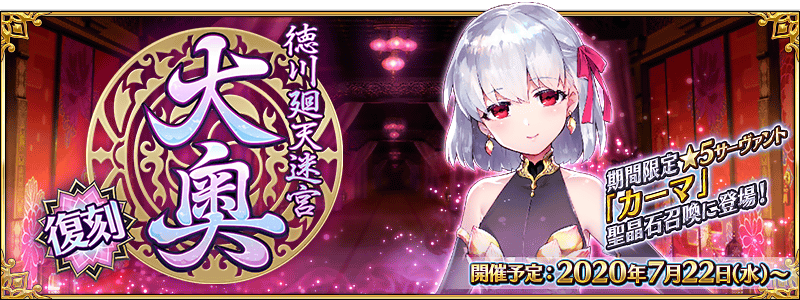

預定舉辦期間限定活動「復刻:徳川廻天迷宮 大奥」！
為了應對從外部原因不明的攻擊，御主趕緊靈子轉移到做為該原因的特異點。
在化作巨大地下迷宮的江戸城・大奥舞台，以被謎團壟罩的最下層為目標開始探索。
本活動中，由複數階層構成的地圖，朝向下個階層前進。
從好幾條通路之中，持續發掘前往最深處的路線吧！
※本活動是再調整在2019年舉辦的期間限定活動「徳川廻天迷宮 大奥」使之更容易遊玩的「復刻版活動」。 ※一部份的關卡為日後開放。
◆活動舉辦時間◆
2020年7月22日(三) 17:00～(預定)
◆活動參加條件◆
滿足以下條件的御主才能參加
・通過第2部 第3章「Lostbelt No.3 人智統合真國 SIN 紅之月下美人」
※不需要通過亞種特異點(從Ⅰ到Ⅳ)。
◆有關從者真名的注意◆
在2018年12月31日(二) 23:00以後新配信的主線故事及期間限定活動、一部份關卡、宣傳活動及召喚中，會顯示隱藏真名的對象從者真名。
※2018年12月31日(一) 22:59前已經配信的主線故事、復刻活動、一部份關卡中不在此限。
◆關於在上次舉辦時獲得過報酬的注意◆
在2019年舉辦的期間限定活動「徳川廻天迷宮 大奥」獲得過特定報酬的情況，會如以下變化。
・在上次舉辦時獲得過「聖杯」的情況，本活動中會以「傳承結晶」代替「聖杯」做為通過報酬。
・在上次舉辦時獲得過「指令紋章」的情況，本活動的對象關卡中可獲得稀有稜鏡或魔力稜鏡代替「指令紋章」。


對象從者在期間限定活動「復刻:徳川廻天迷宮 大奥」的活動關卡中，會得到自身的攻擊威力提升及在關卡通過時絆點數獲得量提升的加成！
強化對象從者，挑戰活動吧！
・得到2種活動加成的從者
下表的從者在活動關卡中會得到「自身的攻擊威力提升」與「絆點數獲得量提升」的加成。
※活動加成的效果量因從者而異。 ※瑪琇・基利艾拉特的「絆點數獲得量提升」效果，是所謂「我方全體含候補的絆點數獲得量提升」的效果。支援時此效果無效。

【對象從者】
| 職階 | 稀有度 | 從者名 |
|---|---|---|
| Saber | ★★★★ | 柳生但馬守宗矩 |
| Lancer | ★★★★ | 帕爾瓦蒂 |
| Caster | ★★★★★ | 雪赫拉莎德 (不夜城的Caster) |
| Assassin | ★★★★★ | 伽摩 |
| ★ | 瑪塔・哈里 | |
| Alterego | ★★★★★ | 殺生院祈荒 |
| Shielder | ★★★ | 瑪琇・基利艾拉特 |
・其他的從者
下表的從者在活動關卡中會得到「自身的攻擊威力提升」的加成。

【對象從者】
| 職階 | 稀有度 | 從者名 |
|---|---|---|
| Saber | ★★★★★ | 沖田總司 |
| ★★★★★ | 紅閻魔 | |
| ★★★★★ | 宮本武藏 | |
| ★★★★★ | 兩儀式 | |
| ★★★★ | 鈴鹿御前 | |
| Archer | ★★★★★ | 清少納言 |
| ★★★★ | 淺上藤乃 | |
| ★★★★ | 織田信長 | |
| ★★★★ | 巴御前 (Archer・地獄) | |
| ★★★ | 俵藤太 | |
| Lancer | ★★★★ | 長尾景虎 |
| ★★★ | 寶藏院胤舜 | |
| ★★ | 武藏坊弁慶 | |
| Rider | ★★★★ | 坂田金時 |
| ★★★★ | 坂本龍馬 | |
| ★★★ | 牛若丸 | |
| Caster | ★★★★★ | 玉藻前 |
| ★★★★★ | 紫式部 | |
| Assassin | ★★★★★ | 刑部姬 |
| ★★★★★ | 酒吞童子 | |
| ★★★★ | 加藤段藏 | |
| ★★★★ | 望月千代女 (Assassin・樂園) | |
| ★★★★ | 兩儀式 | |
| ★★★ | 岡田以藏 | |
| ★★★ | 風魔小太郎 | |
| ★ | 佐佐木小次郎 | |
| Berserker | ★★★★★ | 坂田金時 |
| ★★★★★ | 土方歲三 | |
| ★★★★★ | 源賴光 | |
| ★★★★ | 茨木童子 | |
| ★★★★ | 鬼女紅葉 | |
| ★★★★ | 茶茶 | |
| ★★★ | 清姬 | |
| ★★★ | 森長可 | |
| Ruler | ★★★★★ | 天草四郎 |
| Avenger | ★★★★★ | 魔王信長(織田信長) |
| Alterego | ★★★★★ | 沖田總司〔Alter〕 |
| ★★★★★ | 志度內 | |
| Foreigner | ★★★★★ | 葛飾北齋 |
※就算成為對象從者，也會有不在本活動的主線劇情登場的情況。。 ※「★5(SSR)織田信長」靈基再臨到第3階段的話名稱會變成「★5(SSR)魔王信長」。 ※自7月17日(五) 17:00，在從者選擇畫面和從者強化畫面等，追加活動加成篩選器。由於是只顯示於活動活躍從者的便利功能，敬請活用。

下述的期間中，主線關卡第2部 第3章為止的消耗AP變成1/4！(就算在戰鬥中撤退的情況也會是同様的消耗量)
尚未通過主線關卡的御主，請務必活用此機會！
◆舉辦期間◆
2020年7月17日(五) 17:00～7月31日(五) 11:59
◆對象關卡◆
主線關卡第1部(從特異點F到終局特異點)
主線關卡第2部(從第1章到第3章)
※目前在主線關卡第2部 第3章為止的AP消耗量是永久變成1/2的狀態。因此，宣傳活動結束後，該主線關卡的AP消耗量會變成1/2。 ※請注意亞種特異點(從Ⅰ到Ⅳ)、自由關卡為對象外。